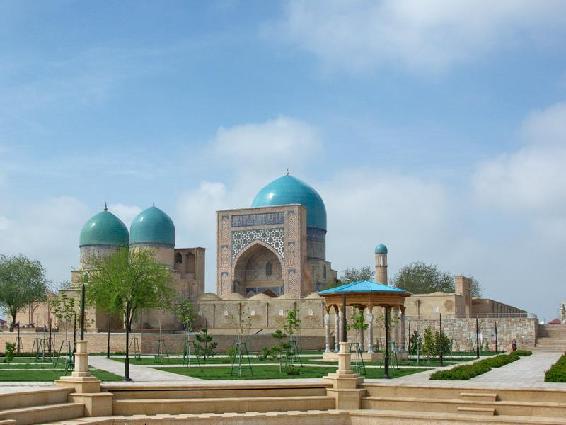
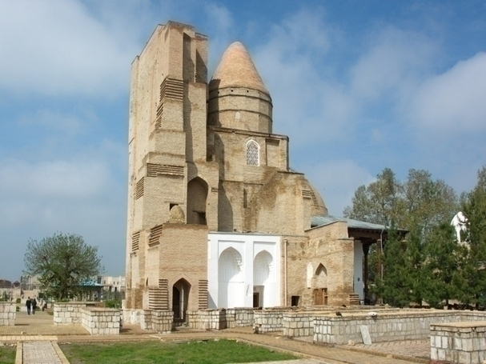

Oqsaroy — Shahrisabzdagi meʼmoriy yodgorlik (1380—1404). Amir Temur qurdirgan.
Shaharning shim.sharqidagi bosh maydonda joylashgan. Bir za-monlar muhtasham, xashamatli
boʻlgan bu saroyning bizgacha yemirilib, haroba holga kelgan ulkan peshtogʻi, ikki chekkasidagi minorasi,
saroy poydevorining bir qismigina saqlangan. O.ning hozirgi koʻrinishi ham salobatli va goʻzaldir.
Bu salobatlilik va goʻzallikka gʻishtlarning yaxlit boʻlib koʻrinishini taʼminlash — old va shim.
de-vor yuzasini sirkor parchinlar bilan bir tekisda ishlash tufayli erishilgan. Peshtoq ravogʻining eni 22,5 m,
balandligi 40 m, umumiy balandligi 50 m dan oshadi. Peshtoq minorasi ichidagi aylanma zina orqali yuqoriga chiqilgan.
Dorut-Tilovat
Dorut-Tilovat (Qurʼon oʻqiladigan, tilovat qilinadigan joy) — Shahrisabz markazida Dor ussiyodat majmuasi
gʻarbida temuriylar xonadoniga mansub qad. inshootlar — Shamsiddin kulol maqbarasi, Gumbazi Sayyidon va Madrasa
oʻrnida barpo etilgan Koʻk gumbaz masjidishn iborat majmua joylashgan.
Amir Temur tomonidan barpo etilgan maqbaraga 1370 yilda vafot etgan piri Shayx Shamsiddin Kulol, keyinchalik
poyiga otasi Amir Taragʻoy dafn etilgan. Maqbara qurilishi Ulugʻbek hukmronligi davrida nihoyasiga yetgan.
Uning qarshisida masjid, jan. da yana bir maqbara qad koʻtargan. Maqbaradagi yozuvlarda "Bu maqbara ulugʻ
olimlarning olimi... (sultonlarning) aʼlosi... qonunchilik va bilimda... din va eʼtiqodda tengi yoʻq
oliy hazrat Sulton Ulugʻbek Koʻragoniyning farmoni bilan bunyod etildi, Alloh uning podshohligini va
sultonligini uzoq qilsin, 841-yil hijriy" degan yozuv saqlangan. Maqbara ichida qoʻshni qabristondan
15—18-asrlarda koʻchirib keltirilgan bir necha sagʻanalar bor. Ularning ayrimlaridagi yozuvlarda
termizlik sayyidlarning nomi saqlangan.

Dor ussiyodat
Dor ussiyodat ("Sayyidlar uyi") — Shaxrisabzdagi meʼmoriy yodgorlik (1379—80).
Amir Temur qurdirgan. 19— 20-asr boshlarida qisman taʼmirlangan. Farzandi Jahongir Mirzo
maqbarasi (Hazrati Imom maqbarasi) va Amir Temurga moʻljallangan yer osti goʻrxonasi saqlanib qolgan.
Dor ut-tilovat bilan bir ansamblni tashkil qilgan. Sharafuddin Ali Yazdiy "Zafarnoma"sida yozilishicha,
Amir Temur Shahrisabzda maxsus bino qurdirgan, unda oʻz oʻgʻli Amirzoda Jahongir va b. amaldorlar hamda
buzrukvorlarning daxmalari qoʻyilsin, deb farmon bergan.
D.us-s. tarhi Yassaviy majmuasiga oʻxshash, asosiy gʻarbiy tarzi ravogʻi 20 m kenglikda boʻlib,
kirish yoʻli xudoyixona (yoki saroyga), undan qoq oʻrtadagi Amir Temurga moʻljallangan yer osti
sagʻanasi joylashgan binoga olib boradi. Xonaning muyulishidagi uzun yoʻlakdan yon xonalarga oʻtiladi.
Bu xonalar oshxona, masjid, kutubxona, mehmonlar turadigan xujralar boʻlgan deb taxmin qilinadi.
Jaqongir maqbarasi Hazrati Imom maqbarasi nomi bilan mashxur. Islom dunyosida yirik olim hisoblangan
Eron (Ray sh.)da vafot etgan kufalik Imom Muhammad ibn al-Hasan ibn Vohid Abu Abdulloh Shayboniy xoki
Amir Temur tomonidan Shahrisabzga koʻchirilgan (1384) degan rivoyat bor (tarixiy manbalar buni tasdiqlamaydi).
1868—69 yillarda oʻrnatilgan maqbara eshigida Hazrati Imom nomi oʻyib yozilgan.

Chubin madrasasi
Shaharning shimoliy qismida, Oqsaroy yaqinida Chubin madrasasi saqlanib qolgan.
U 17-asr oxirida pishiq gʻishtdan qurilgan boʻlib, anʼanaviy tarzda talabalar uchun xona va
idoralardan iborat boʻlgan. Xonalar katta va kichik gumbazlar bilan qoplangan. Madrasa 1994-1996
yillarda rekonstruksiya qilingan. Hozir bu yerda Shahrisabz tarixi muzeyi joylashgan.
Malik Ashtar masjidi
Shahrisabzliklar tilida “Malik Ajdar”ga aylanib ketgan “Malik Ashtar”
masjidining nomi arabcha “Moliki ushtur” so‘zidan kelib chiqqanligi aytiladi.
Buning ma'nosi “Tuyador” bo‘lib, ya'ni masjid, savdo karvonlarida qatnaydigan
ko‘plab tuyalarga ega bo‘lgan boy tomonidan qurdirilgan. Chamasi, masjid
qurilmasdan avval bu hududda VIII — X asrlarda ziyorat qilinadigan qadimiy
dafina-qabr joylashgan bo‘lishi mumkin.
Hozirda “Malik Ashtar” masjidi hovli atrofi bo‘ylab joylashgan masjid va hujralardan
tashkil topgan inshootlar majmuasidan iborat. Ularning eng ahamiyatlisi xonaqo bo‘lib,
gumbazi yaqin-atrofdagi uylarning tomlaridan balandroq. Me'moriy yechimi mahalla
masjidlariga xos. Masjid binosi XIX asr oxiriga kelib to‘la shakllangan.
Xazrati Imom Masjidi
Dor ussiyodat majmuasining yonida joylashgan Xazrati Imom Jome masjidi
Eski chorsu bozori
Chorsu (forschadan chor — "toʻrt", su —"bozor"; chorrahadagi bozor joy) — 1)
tarixiy shaharlarning asosiy chorrahasidagi odatda usti yopiq boʻlgan savdosotiq joyi;
aksari shaharning oʻrtasida qurilib, markaziy mujassamotga ega boʻlgan; 2) umuman savdosotiq joyi.
Ularning paydo boʻlishi shaharning oʻzi kabi qadimiydir. Misrda "shahar" maʼnosi doyra
ichidagi chorraha shaklidagi iyeroglif orqali ifodalangan. Qad. Rim shaharsozligida
chorraha maxsus imorat (tetrapil)lar bilan ajratilgan. Bolqon mamlakatlari meʼmorligida
Chorsu nomi "charshiya" deb talaffuz etiladi (masalan, Makedoniyadagi Skople va Bitola
shaharlarining qadimgi bozorlari). Shahrisabzda Chorsularning yaqqol namunasi saklangan.
«Kunduzak» masjidi
«Kunduzak» masjidi. U 19-asrda qurilgan va Dorut Tilovat madrasasidan unchalik
uzoq bo‘lmagan joyda joylashgan. Yaqinda amalga oshirilgan rekonstruksiyadan so‘ng u
yangidek ko‘rinadi va chiroyli fotosuratlarni sevuvchilarni o‘ziga jalb qiladi.
«Kunduzak» masjidi
Koʻk gumbaz masjidi - Shahrisabzdagi meʼmoriy yodgorlik.
Ulugʻbek Mirzo otasi Shoxrux Mirzo nomidan qurdirgan (1434—35). Peshtoq
ravogʻida ularning nomlari va qurilish vaqti bitilgan tarixiy yozuvlar saqlangan.
K.g.m. Dor ut-tilovat ansambli tarkibidagi asosiy jome masjid. Koʻk koshin bilan
qoplangan gumbazi (nomi ham shundan), peshtoqining oʻng va chap tomonidagi ustunlari,
boloxonasi boʻzilib ketgan. Binoga sharqdan peshtoq (ravogʻining kengligi 10 m) orqali
kiriladi. Peshtogʻida serjilo handasiy bezaklar koʻp ishlatilgan. Ustunlarida, asosiy
ravoq va qanoslarida guldor sopollardan foydalanilgan. Xonaqoh (12,7x12,7 m) tashqi
poygumbazida sirkor moviy, koʻk va oq rangli bezaklar orasiga Qurʼon oyatlari bitilgan.
Ichki qismidagi 8 ta mayda ravoqchalar romb shaklidagi qalqonsimon bagʻallar bilan oʻzaro
birlashtirilgan va ravoq shaklidagi 16 tayanchiqqa tayantirilgan. Gʻishtin devor
burchaklarida 4 ta aylanma zina orqali ayvon tomiga chiqilgan. Ayvonning yon
taxmonlariga keng ravoq orqali oʻtilgan. Hozir ular berkitib qoʻyilgan. K.g.m.
1970-yillarda hamda Amir Temurning 660 yilligi munosabati bilan (1995— 96)
qayta taʼmirlangan.